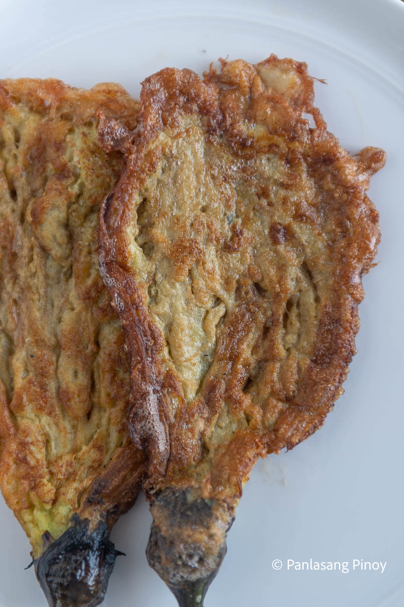

Tortang Talong

Description
Beating an egg can make for a great ingredient in several recipes around the world. From baked goods to classic omelettes, it is endlessly versatile, and goes with both sweet and savory dishes. But who knew that some beaten eggs, eggplant, and the right seasonings could create the ever useful and delicious Tortang Talong.
Ingredients
- 4 pieces eggplant
- 2 pieces eggs
- 1 teaspoon salt
- 6 tablespoons cooking oil
Instructions
- Grill the eggplant until the skin turns almost black.
- Let the eggplant cool for a while then peel of the skin. Set aside.
- Crack the eggs in a bowl.
- Add salt and beat.
- Place the eggplant on a flat surface and flatten using a fork.
- Dip the flattened eggplant in the beaten egg mixture.
- Heat the pan and pour the cooking oil.
- Fry the eggplant that was dipped in the beaten egg mixture. Make sure that both sides are cooked.